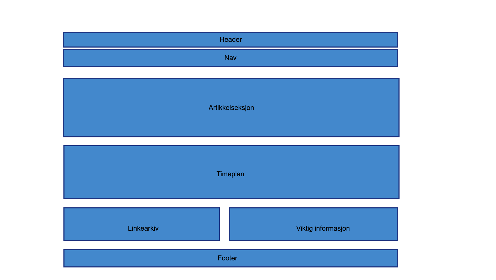
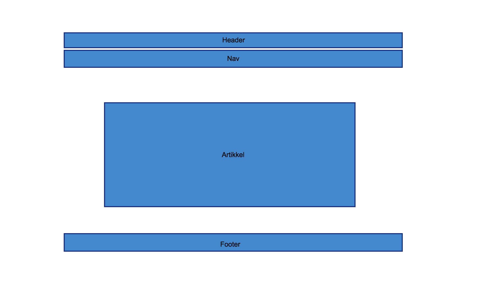

Planleggingen av nettsiden startet med at jeg googlet på ulike nettsider for inspirasjon. Etter det prøvde jeg å skissere opp en forside på papir. Men valgte senere å bruke programmet Pencil til å lage den endelige strukturskissen, eller wireframen. Det ble noen forandringer på nettsiden i forhold til strukturskissene, ettersom jeg fant bedre løsninger.
Strukturskissene for forsiden og for artikkelsidene ser du under.
 